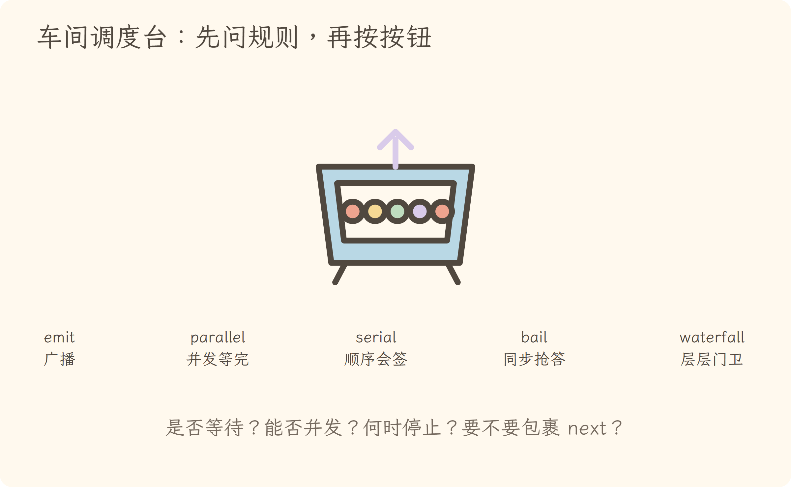
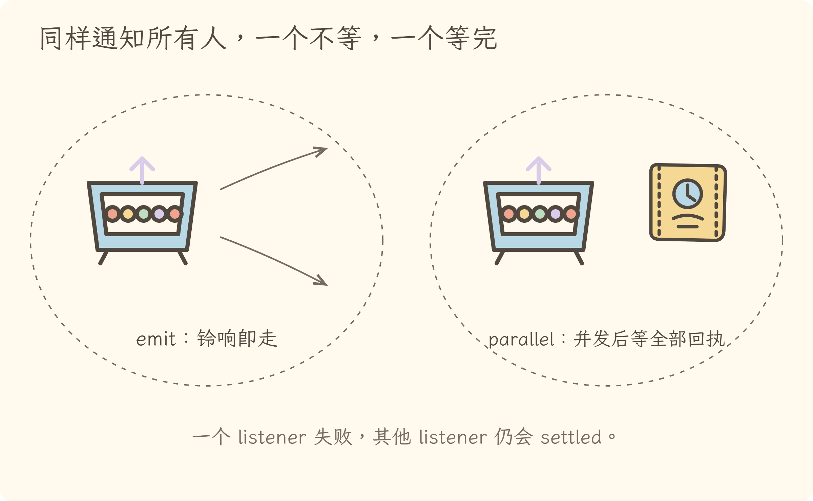
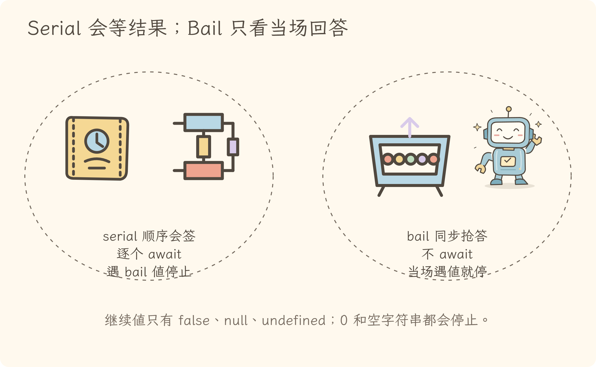
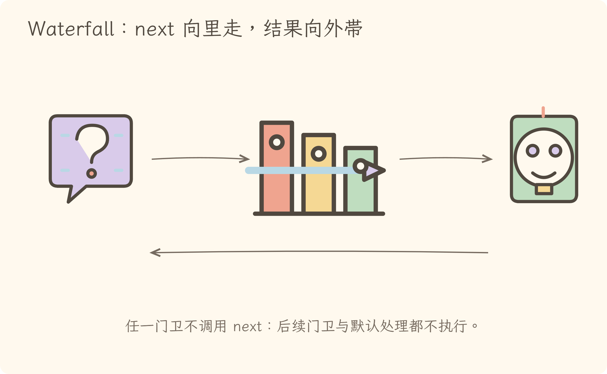
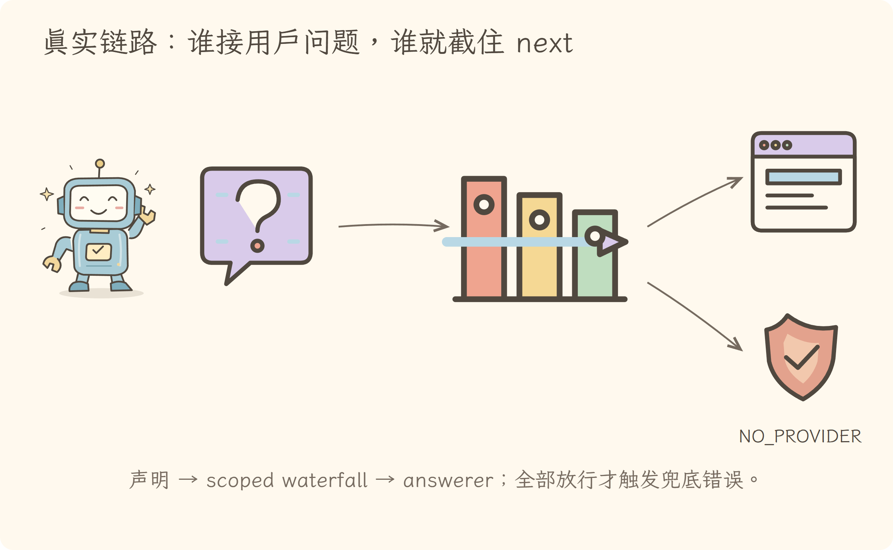

视觉课件
第八讲视觉课件 · 同是发事件，调度规则完全不同
1. 五个按钮先按意图选

先问“要不要等、能否并发、谁有权停止、是否需要包裹下一层”，再选 API。
2. emit 只响铃，parallel 等全部回执

parallel 收集所有 settled 结果；一个失败不会让其他监听器自动取消。
3. serial 会等，bail 不等；两者都可抢先结束

0 和空字符串也算 bail 值；false、null、undefined 才继续。
4. waterfall 是层层门卫，不是普通数据流水线

不调用 next()，后续 listener 和默认 inner 都不会执行。
5. 用户提问用 waterfall 选择回答者

回答者可以直接接单，也可以调用 next() 让下一位尝试。
逐步讲解
第八讲逐步讲解 · 五种分发模式不是五个近义词
源码快照：cd5ef8148158c3a752a658978873241fdf8e2bbc
一、用四个问题选模式
| 模式 |
等待异步 |
并发 |
提前停止 |
主要用途 |
| emit |
否 |
否，调用本身同步遍历 |
否 |
只观察通知 |
| parallel |
是 |
是 |
否 |
独立任务全部完成 |
| serial |
是 |
否 |
遇 bail 值 |
有顺序的异步裁决 |
| bail |
否 |
否 |
遇 bail 值 |
同步找第一个答案 |
| waterfall |
由链决定 |
嵌套 |
不调用 next 即截断 |
包裹、接管、fallback |
二、emit 与 parallel：都通知所有人，但完成语义不同
emit 同步调用 listener，却不等待 listener 返回的 Promise。函数返回只表示“通知动作已发出”，不表示异步工作完成。
parallel 用 Promise.allSettled 等全部 listener。若有失败，它在所有工作 settled 后抛 AggregateError；并不会因为第一个失败就自动取消其他任务。
三、serial 与 bail：停止规则相同，时钟不同
isBailed 把除 null、false、undefined 之外的值都视为“已有结论”。因此 0、''、对象和 Promise 都会停止链。
serial 对每个结果 await，适合异步会签；bail 同步检查返回值，不会展开 Promise。监听器返回 Promise 时，Promise 对象本身已经是 bail 值。
四、waterfall 的核心是 around middleware
waterfall 把最后一个参数取作默认 inner，再从后往前包装 listener。最先注册的 listener 位于最外层，因此最先进入：
ctx.on('request', async (input, next) => {
const checked = validate(input)
const result = await next(checked)
return audit(result)
})
调用 next() 才进入下一层；返回时结果再向外冒。监听器可以：
- 前置修改参数；
- 后置处理结果；
- 直接返回并接管；
- 拒绝请求且不调用
next()。
所以它不是简单的“把 value 依次传给数组函数”。
五、真实案例：谁来回答用户问题
user-questions 在类型中声明 user-questions/request，listener 获得 request 和 next。
UserQuestionService.ask() 把 noAnswerer 作为最终 inner：
- 作用域内 answerer 先收到请求；
- 能回答就直接返回；
- 不负责则调用
next()；
- 全部放行后，
noAnswerer 抛 NO_PROVIDER。
这比集中写一个 if (uiA) else if (uiB) 更可组合，answerer 又会作为 Fiber effect 自动清理。
六、从事件名读源码的三站法
- 搜索类型声明：参数、返回值、是否带
next；
- 搜索 dispatch：用的是 emit/parallel/serial/bail/waterfall 哪一个；
- 搜索
ctx.on：谁监听、是否 scope 过滤、是否调用 next()。
只找到声明不能证明运行路径；只找到 listener 也不能证明它何时被触发。
七、一句话总结
事件 API 的差别不在名字，而在调度契约：是否等待、是否并发、何时停止，以及 listener 能否包裹下一层。
练习与答案
第八讲练习与答案
练习 1：只通知，不等待
缓存刷新后只想通知观察者，调用者不需要等待异步工作完成，应选什么？
展开答案
emit。它同步调用监听器，但不等待监听器返回的 Promise。
练习 2：独立任务全部完成
三个持久化后端都要收到 flush，最后再汇总失败，应选什么？
展开答案
parallel。它并发执行并等待全部 settled，失败汇总为 AggregateError。
练习 3：0 会不会停止
serial listener 返回 0，后续 listener 会继续吗？
展开答案
不会。Cordis 只有 false、null、undefined 视为未 bail；0 也是有效停止值。
练习 4：Promise 与 bail
bail listener 返回一个 Promise，Cordis 会等待它解析后再判断吗？
展开答案
不会。bail 是同步模式，Promise 对象本身已经是非空返回值，因此立即停止并返回这个 Promise。
练习 5：next
user-question answerer 不负责当前请求，却直接 return undefined，会自动进入下一位吗？
展开答案
不会。waterfall 是否继续由 next() 决定；不调用就截断后续链。应显式 return next()。
分享稿
第八讲分享稿 · 五种事件不是五个近义词
三分钟主线
- emit 像广播铃：叫到所有人，但不等异步工作。
- parallel 像并发派工：全部开工，全部 settled 后汇总失败。
- serial 像顺序会签：逐个 await，遇有效答案停止。
- bail 像同步抢答：不 await，第一份有效返回立即获胜。
- waterfall 像层层门卫：
next() 向里，结果向外；不 next 就接管。
真实例子
userQuestions.ask() 通过 scoped waterfall 找回答者，最后以 NO_PROVIDER 作为默认 inner。回答者能处理就返回，不能处理就 next()。
收尾
读事件源码先找三处：类型声明、dispatch 方式、listener。只看到事件名，仍不知道调度契约。